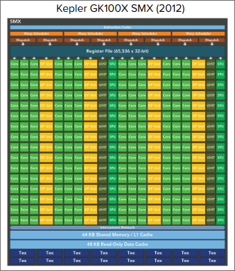
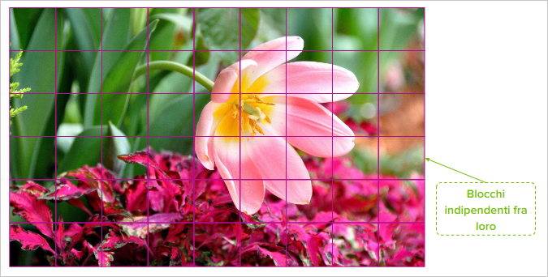

Modello di Esecuzione CUDA
Indice
Architettura Hardware GPU
Introduzione al Modello di Esecuzione CUDA
In generale un modello di esecuzione fornisce una visione operativa di come le istruzioni vengono eseguite su una specifica architettura di calcolo
Caratteristiche Principali:
- Astrazione dell'architettura GPU NVIDIA
- Conservazione dei concetti fondamentali tra le generazioni
- Esposizione delle funzionalità architetturali chiave per la programmazione CUDA
- Basato sul parallelismo massivo e sul modello SIMT (Single Instruction, Multiple Threads)
Importanza:
- Offre una visione unificata dell'esecuzione su diverse GPU
- Fornisce indicazioni utili per l'ottimizzazione del codice in termini di:
- Througput delle istruzioni.
- Accessi alla memoria.
- Facilita la comprensione della relazione tra il modello di programmazione e l'esecuzione effettiva
Streaming Multiprocessor (SM)
Gli streaming multiprocessor (SM) sono i blocchi di elaborazione principali delle GPU NVIDIA. Ogni SM è composto da:
- Unità di calcolo
- Memoria condivisa
- Risorse (registri, cache, ecc.)
Il parallelismo hardware delle GPU è ottenuto attraverso la replica di questo blocco architetturale

Caratteristiche Principali:
- CUDA Cores: Unità di calcolo che eseguono le istruzioni
- Shared Memory / L1 Cache: Memoria condivisa tra i thread di uno stesso blocco
- Register File: Memoria veloce per i registri dei thread
- Load/Store Units: Unità per l'accesso alla memoria globale
- Special Function Units: Unità per operazioni speciali (es. funzioni matematiche)
- Warp Scheduler: Unità per la gestione dei warp
- Dispatch Unit: Unità per l'assegnazione dei warp ai CUDA Cores
- Instruction Cache: Memoria per le istruzioni

CUDA Core
Un Cuda è l'unità di elaborazione di base all'interno di un SM di una GPU NVIDIA.

Composizione e Funzionamento (Fermi)
I CUDA Core erano unità di elaborazione relativamente semplici, in grado di eseguire sia operazioni intere (INT) che in virgola mobile (FP) in un ciclo di clock.
- ALU (Arithmetic Logic Unit): Ogni CUDA Core contiene un'unità logico-aritmetica che esegue operazioni matematiche di base come addizioni, sottrazioni, moltiplicazioni e operazioni logiche.
- FPU (Floating Point Unit): Ogni CUDA Core contiene un'unità in virgola mobile che esegue operazioni in virgola mobile come addizioni, sottrazioni, moltiplicazioni e divisioni.
I CUDA Core usano registri condivisi a livello di Streaming Multiprocessor per memorizzare i dati temporanei e i risultati intermedi.
Evoluzione dell'architettura (da Kepler)
Dall'architettura Kepler NVIDIA ha introdotto la specializzazione delle unità di calcolo all'interno di un SM:
- General:
- Unità FP64: Unità specializzata per operazioni in virgola mobile a doppia precisione
- Unità FP32: Unità specializzata per operazioni in virgola mobile a singola precisione
- Unità INT: Unità specializzata per operazioni intere
- AI:
- Tensor Core: Unità specializzata per operazioni di moltiplicazione e accumulo di matrici
- Graphics:
- Ray Tracing Core (RT Core): Unità specializzata per operazioni di ray tracing
- Unità di Texture: Unità specializzata per operazioni di texture mapping
- Unità di Rasterizzazione: Unità specializzata per operazioni di rasterizzazione
Ogni unità di elaborazione esegue un thread in parallelo con altri nel medesimo SM.
Architettura Fermi (2010)
Caratteristiche Principali:
- Prima architettura GPU completa per applicazioni HPC ad alte prestazioni.
- Fino a 521 CUDA cores organizzati in 16 SM.
- Ogni SM contiene:
- 32 CUDA Cores.
- 2 unità di scheduling e dispatch.
- 64KB di Shared Memory/Cache L1.
- 32.768 registri da 32 bit.
- 768 KB di memoria cache L2 con coalescenza di memoria.
- Interfaccia di memoria a 384 bit con GDDR5, supporto fino a 6 GB di memoria globale.
- GigaThread Engine per la gestione di migliaia di thread.
- Interfaccia Host-Device per connessione CPU via PCI Express.

Esecuzione Concorrente dei Kernel:
- L'architettura permette l'esecuzione di più kernel in modo concorrente.
- Supporta fino a 16 kernel in esecuzione contemporanea.
- Ottimizza l'uso della GPU per applicazioni con diversi kernel.
- Appare come una architettura MIMD (Multiple Instruction, Multiple Data).
- Le generazioni successive a Fermi supportano un numero ancora maggiore di kernel in esecuzione.

Architettura Kepler (2012)
Caratteristiche Principali GPU
- L'architettura Kepler include 3 importanti novità:
- Straming Multiprocessors Potenziati (SMX).
- Dynamic Parallelism: Permette ai kernel di lanciare altri kernel.
- Hyper-Q: Permette a più CPU di comunicare con la GPU.
- GPU Boost: Permette di aumentare la frequenza di clock della GPU in base al carico di lavoro.
- 2688 Cuda Corse organizzati in 15 SMX.
- 6 Controller di Memoria a 64 bit.
- 6 GB di Memoria Gloabale DDR5.
- Larghezza di Banda della memoria: 250 GB/s.
- 1536 KB di Cache L2.
- Interfaccia Host-Device PCI Express 3.0.

GK100X SMX
Caratteristiche Principali - Singolo SMX
- Ogni SMX contiene 192 CUDA Cores, per un totale di 2880 CUDA Cores.
- Unità di precisione:
- Unità di precisione singla (FP32): 192 CUDA Cores.
- Unità di precisione doppia (FP64): 64 CUDA Cores.
- 32 Unità di Funzione Speciale (SFU).
- 32 Unità di Load/Store (LD/ST).
- 64 KB di Shared Memory/Cache L1.
- 48 KB di Read-Only Data Cache.
- 65,536 Registri da 32 bit.
- 4 Warp Scheduler.
- 8 Instruction Cache.

Evoluzione


Tensor Core: Acceleratori di Intelligenza Artificiale (Volta +)
I tensor core sono unità di elaborazione specializzata per operazioni tensoriali (array multidimensionali), progettati per accelerari i calcoli di AI e HPC, presenti in GPU NVIDIA RTX da Volta (2017) in poi.
Caratteristiche Principali:
-
Esegue operazioni matrice-matrice in precisione mista.
-
Supporta formati FP16, FP32, FP64, INT8, INT4, BF16 e nuovi formati come TF32.
-
Offre un significativo speedup nel calcolo senza compromettere l'accuratezza
-
Fused Multiply-Add (FMA): Un'operazione che combina una moltiplicazione e una addizione di scalari in un unico passo eseguendo $d=a*b+c$. Un CUDA core esefue 1 FMA per ciclo di clock in FP32.
-
Matrix Multiply and Accumulate (MMA): Un'operazione che combina una moltiplicazione e una addizione di matrici in un unico passo eseguendo $D+=A*B$. Un Tensor Core esegue 64 FMA per ciclo di clock in FP16.
-
Una MMA di dimensione $mn$ richiede $mn*k$ operazioni FMA dove $k$ è il numero di colonne di $A$ e il numero di righe di $B$.

Esecuazione Parallela
- ogni tensor core esegue 64 FMA in un singolo ciclo
- Per operazioni su matrici più grandi, queste vengono decomposte in sottomatrici 4x4
- più operazioni 4x4 vengono eseguite in parallelo su diversi Tensor Core
Evoluzione dei NVIDIA Tensor Core
Le generazioni più recenti di CPU hanno ampliato la flessibilità e le prestazioni dei Tensor Core, supportando dimensioni di matrici più grandi con un maggiore numero di formati numerici

- Acelerazione significativa dei calcoli
- Riduzione del consumo di memoria e energia.
- Perdita di Precisione: Si è dimostrato che ha un impatto minimo sulla accuratezza finale dei modelli di deep learning.
Organizzazione e Gestione dei Thread
SM, Trehad Blocks e Risorse
- Parallelismo Hardware
- Più SM per GPU permettono l'esecuzione simultanea di migliaia di thread (anche da kernel differenti).
- Distribuzione dei Thread Block
- Quando un kernel viene lanciato, i blocchi vengono distribuiti dal GigaThread Engine ai SM.
- Le variabili di identificazione e dimensione
gridDim, blockIdx, blockDim e threadIdx sono rese disponibili ad ogni thread e condivise nello stesso SM.
- Una volta assegnati a un SM, i thread di un blocco eseguono esclusivamente su quell'SM.
- Gestione delle Risorse
- Più blocchi di Thread possono essere assegnati allo stesso SM contemporaneamente.
- Lo scheduling dei blocchi dipende dalla disponibilità delle risorse dell'SM e dai limiti architetturali di ciascun SM.
- Parallelismo Multi-Livello
- Parallelismo a livello di istruzioni: Le istruzioni all'interno di un singolo thread sono eseguite in pipeline.
- Parallelismo a livello di Thread: Esecuzione concorrente di gruppi di threads (warp) su un SM.
Corrispondenza tra Vista Logica e Vista Hardware

Software
-
Thread:
- ha uno spazio di memoria privato (registri nell'SM e Memoria locale) per indifie, variabili, e risultati intermedi.
-
Thread Block:
- Gruppo di thread eseguiti concorrentemente.
- Cooperazione tramite barriere di sincronizzazione
- Usa shared memory per comunicazione inter-thread.
- Un blocco di thread viene assegnato esclusivamente ad un solo SM.
- Una volta che un blocco di thread è stato assegnato ad un SM, vi rimane fino al completamento dell'esecuzione.
-
Grid:
- Insieme di thread block che eseguono lo stesso kernel.
- Accesso comune alla global memory.
- I thread block non possono sincronizzarsi direttamente tra di loro.
Hardware
- SM:
- Un SM più contenere più blocchi di thread contemporaneamente.
- Ogni SM ha un limite massimo di thread block gestibili, determinato dalla sua compute capability.
Distribuzione dei Blocchi su Streaming Multiprocessor
Supponiamo di dovere realizzare un algoritmo parallelo che effettuio il calcolo parallelo su una immagine

- Il gigathread Engine smista i blocchi di thread agli SM in base alle risorse disponibili.
- CUDA non garantisce l'ordine e non è possibile scambiare dati tra i blocchi.
- Ogni blocco viene elaborato in modo indipendente.

- Quando un blocco completa l'esecuzione e libera le risorse, un nuovo blocco può essere assegnato allo SM. Questo processo continua fino a quando tutti i blocchi del grid non sono stati elaborati.
Scalabilità in CUDA
Per scalabilità in CUDA ci si riferisce alla capacità di una applicazione di migliorare le prestazioni proporzionalmente all'aumentodelle risorse hardware disponibili.
Più SM disponibili = più blocchi eseguiti contemporaneamente = Maggiore Parallelismo.
Nessuna modifica al codice richiesta per sfrittare hardware più potente.

Modello di Esecuzione SIMT e Warp